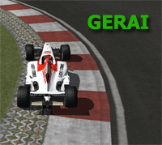
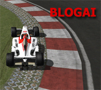
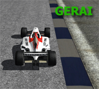

|
Prisijungti

Meniu
F1 Meniu
Lankytojai
1 nariai prisijungæ ( 1 nariai narðo Straipsniai) Nariai: 0 Sveèiai: 1 daugiau...
|
|
|
 |
Reglamentas
Reglamentas
ÁÞANGA
Virtualus Lietuvos F1 èempionatas - tai lyga, naudojanti 'ISI' rFactor þaidimà ir ávairias modifikacijas.
Ðis èempionatas jums siûlo ‘online’ lenktynes palaikomas galingo serverio.
Pilotai ið visos Lietuvos gali registruotis ir bandyti iðsiaiðkinti, kas yra greièiausias.
Ðios lygos imituoja realø F1 pasaulio èempionatà ir bandys tai atlikti kaip ámanoma geriau su esamomis galimybëmis.
Prieð kiekvienà èempionatà bûna atranka pagal kurià yra skirstomi bolidai.
Taisyklës
Neoficialiø sesijø slaptaþodis yra 'lietuva'.
Já naudoja visi turnyro dalyviai kurdami treniruoèiø
serverius. Taigi jei matote, jog yra serveris su
pavadinimu 'LRC server' ar kà nors panaðaus, tuomet labai
tikëtina, kad slaptaþodis bus 'lietuva'.
Vartotojas 'Teisëjas'
Vartotojas 'Teisejas'
yra asmuo, prie kurio gali prieiti visi
èempionato teisëjai. Jo iðsakoma nuomonë yra oficiali
teisëjø nuomonë.
Kilus neaiðkumams siøskite asmeniná praneðimà
'Teisejas', jei norite iðsakyti kokius nors
pastebëjimus, idëjas, nesivarþykite - siøskite asmeniná
praneðimà 'Teisejas'.
Turinys
0. Prisiregistravimas
1. Pagrindinës taisyklës
2.
Taðkø sistema
3. Komandos ir Pilotai
4.
‘Online’ etiketas
5. Vairavimo etiketas
6.
Trasos kirtimo taisyklës
7. Etapo/Lenktyniø procedûros
8. Kvalifikacijos procedûros
9.
Þaidimo nustatymai ir leidþiamos pagalbos
10.
Serverio lûþimai ir ‘Restart’ po serverio lûþimo
11.
Pakeitimai
0.1
Registruotis gali visi norintys. Jei èempionato metu kas
nors ið pagrindinës lygos norëtø pasitraukti, tuomet
ankðèiausiai prisiregistravusiems bus suteikiama
pirmenybë pakeisti pasitraukusá pilotà. Taip pat turës
tam neprieðtarauti likæs, komandos pilotas, jis galës
reikðti pretenzijas tik turëdamas kità piloto pakeitimo
variantà.
0.2
Registruotis gali tik pilotai turintys didesná nei 128 kb/s
siuntimo ir 256 kb/s priëmimo interneto greitá. Jûsø
Internetas bus patikrintas, kai iðsiøsite registracijà.
0.3
Vartotojas gali turëti tik vienà lenktynininko vardà, vardø keitinëjimas ir sukèiavimas bus
labai grieþtai baudþiamas. Norint laikinai pakeisti pilotà bûtina suderinti veiksmus su turnyro administracija.
0.4
Registruodamiesi jûs privalote vesti vartotojo vardà be
‘wild characters’.
0.5
Norëdami registruotis, jûs pirmiausia privalote
prisiregistruoti puslapyje. Tai galite padaryti
èia. Jûsø èempionato slapyvardis
bus identiðkas puslapio rodomam slapyvardþiui. Sekantis jûsø
veiksmas turëtu bûti asmeninio praneðimo nusiuntimas
'Teisejas'. Raðomoje þinutëje turi buti ðie duomenys (
Laukai paþymëti * yra privalomi !):
Vardas*:
Pavardë*:
El. paðtas*:
Telefonas:
Miestas:
Vairo modelis:
Interneto greitis*:
download/upload (atsiuntimas/iðsiuntimas)
Kiek laiko þaidþiate F1*:
Kodël norite dalyvauti èempionate*:
Ar sutinkate su ðio turnyro reglamentu?*:
|
›› 1.
Pagrindinës taisyklës |
|
1.1
Visi èempionato dalyviai turi laikytis taisykliø.
Dalyviai, kurie paþeidinës taisykles, bus nubausti pagal
esamas taisykles.
1.2
rFactor èempionatas susideda ið 17 etapø. Etapø
datos ir trasos yra skelbiamos tvarkaraðtyje.
1.3
Visos programos ir failai, kuriø jums reikia dalyvauti
èempionate, yra apraðyti
instaliacijos gide,
tai irgi taisykliø dalis. Negalima naudoti jokiø kitø
papildomø programø, failø, tik tuos, kurie paminëti
instaliacijos gide. Uþ þaidimo modifikacijø papildymus, kurie nenurodyti instaliacijos gide, bei kitø
programø, kurios gali paveikti bolido ar trasos savybes, pilotai
bus baudþiami grieþèiausia, paðalinimo ið etapo, bauda. Èempionatui yra rekomenduojama
pasidaryti ðvarià rFactor instaliacijà.
1.4
Naujienos ir svarbûs praneðimai yra publikuojami pirmame
interneto svetainës puslapyje.
1.5
Yra galimybë diskutuoti forumuose, aptarti naujienas.
Nenaudokite forumø þinutes áþeidinëjimui ar kitokiai
nelegaliai veiklai. Asmenys nusiþengæ ðiai taisyklei bus
grieþtai baudþiami, gali bûti net paðalinti ið lygos.
1.6.1 Èempionato
organizatoriai gali modifikuoti ðias taisykles bet
kuriuo metu.
1.6.2 Teisëjai
gali skirti baudas neapibrëþtas ðiose taisyklëse arba
pakeisti esamas baudas atsiþvelgiant á situacijà.
1.6.3 Teisëjai
gali skirti grieþtesnæ galutinæ baudà
nesvarbu,
ar atlikote
'Drive-Through' baudà ar ne,
atsiþvelgdami á situacijos sudëtingumà.
2.1
rFactor èempionate naudojama taðkø sistema yra
identiðka esamai F1 pasaulio èempionato sistemai:
Vieta/Taðkai
1– 10
2– 8
3– 6
4– 5
5– 4
6– 3
7– 2
8– 1
2.2
rFactor èempionato nugalëtojas bus tas, kuris
surinks daugiausia taðkø per 17 lenktyniø etapø.
2.3
rFactor konstruktoriø èempionato komanda nugalëtoja
bus ta, kuri surinks daugiausia taðkø (jos taðkai, tai
pilotø atstovavusiø tai komandai susumuoti taðkai), per
17 lenktyniø etapø.
2.4
Jei du ar daugiau pilotø baigia sezonà su
tokiu pat taðkø skaièiumi, aukðtesnæ vietà turës tas
pilotas:
a) kuris uþëmë
daugiau pirmø vietø èempionate.
b) jei pirmø
vietø skaièius toks pat, tada tas, kuris uþëmë daugiau antrø
vietø.
c) jei
antrø vietø
skaièius toks pat, tada kuri uþëmë daugiau 3 vietø ir
taip kol iðaiðkës nugalëtojas.
2.5
Jei dvi ar daugiau komandos baigia sezonà su
tokiu pat taðkø skaièiumi, aukðtesnæ vietà turës ta
komanda:
a)
kurios pilotai uþëmë daugiau pirmø vietø èempionate
(komandinëje áskaitoje).
b) jei pirmø vietø skaièius toks pat, tada ta, kurios
pilotai surinko
daugiau taðku viename ið èempionato etapø.
c)
jei taðkø, iðkovotø viename ið èempionato etapø,
skaièius toks pat, tada ta, kuri uþëmë daugiau antrø
vietø.
›› 3. Komandos
ir Pilotai
|
|
3.0
Visos komandos yra vienodo galingumo, t.y. bolidai yra identiðki techniðkai.
3.1
Bus naudojama modifikuota FSONE 08 fizika. Visi pilotai privalo ásiraðyti ðiuos failus (Paaiðkinamai yra instaliacijos gide).
3.2
Komanda gali
turëti maksimaliai 2 pilotus per etapà ir vienà test
pilotà.
3.3
Pilotai, kurie nedalyvavo kvalifikacijoje gaus þemiausias
starto pozicijas pagal turimus èempionato taðkus, jei jø
lygiai tuomet pirmø, antrø ir t.t. vietø principu þr.
2.4. Jei tai pirmas etapas, tuomet pagal atrankos
rezultatus.
3.4
Komandø nurodymai nëra leidþiami ir bus baudþiami. Rimti
nusiþengimai (kaip piloto konkurento iðmuðimas,
nesàþiningas blokavimas ir t.t.) bus grieþtai baudþiami,
komanda gali bûti diskvalifikuota keliems etapams.
3.5
Komandos gali keisti savo pilotus sezono metu, bet tik
ne po kvalifikacijos. Prieð keitimà reikia susisiekti su
teisëjais ir tik jiems davus leidimà bus galimas pilotø
keitimas. Teisëjai gali uþdrausti keitimà, pavyzdþiui dël
neþinomo piloto pajëgumo (kad nesukeltø incidentø), arba
dël teisëjø nuomone piktybinio pilotø keitinëjimo, arba
ko nors panaðaus. Taip pat turi bûti gautas komandos (nors vieno piloto sutikimas) leidþiantis pakeisti
kaþkurá ið esamø pagrindiniø pilotø, taip pat antrasis
komandos pilotas turi neprieðtarauti.
3.6
Pilotas ðalinamas ið èempionato, jei nedalyvauja 3
etapuose, arba 2 etapuose ir yra pasyvus (t.y.
nediskutuoja, su niekuo nebendrauja). Ar pilotas yra
pasyvus spræs teisëjai.
3.7
Pilotai yra atsakingi uþ teisingus savo þaidimo
nustatymus, tik 100% atitikimas bus priimtas.
3.8
Lenktynës ávyks tik tuo atveju jei bus 10 arba daugiau
pilotø pasiruoðusiø startui.
4.0
Per 'Practise'
sesijà pasitikrinkite ar jûs neturite þaidimo 'Bug'ø'
(klaidø). Vaþiuoti
kvalifikacijà ar lenktynes su þaidimo klaidomis yra
grieþtai draudþiama. Pastebëjæ toká fenomenà jûs
nedelsiant privalote pasitraukti ið lenktyniø ar
kvalifikacijos. Jei tai ávyksta kvalifikacijos metu,
tuomet susitarti su marðalu, dël persijungimo á serverá.
[Bauda: 1 kartà: Diskvalifikacija ið etapo ir paðalinimas
ið sekanèiø lenktyniø! Pasikartojus: paðalinimas ið èempionato!]
4.1
Ásitikinkite, kad visos programos (kaip mIRC, Skype,
Emule, Bit Comet
etc.) naudojanèios interneto ryðá bûtø uþdarytos prieð
jungiantis á serverá. Turëkite galvoje, kad tai paveikia
JÛSØ ir KITØ pilotø 'online' lenktyniavimà.
4.2
Prisijungus á serverá negalima nieko raðyti jei jums to
neleido lenktyniø marðalas (serverio kûrëjas, arba, jei
yra teisëjas). Tik marðalas gali leisti diskutavimà per
sesijà ir tai vienintelis bûdas gauti leidimà raðyti
þinutes.
[Bauda: 1 kartas: áspëjimas! 2 kartas: +5 pozicijos prie kvalifikacijos laiko kitame etape; Pasikartojimas:
paðalinimas ið 1 ar daugiau lenktyniø / paðalinimas ið èempionato]
4.3 Lenktyniø
marðalo instrukcijø privaloma laikytis.
[Bauda: +5 pozicijos prie kvalifikacijos laiko kitame etape; 2 kartas: paðalinimas ið 1 lenktyniø!
Pasikartojimas: paðalinimas ið 2 ar daugiau lenktyniø / paðalinimas ið èempionato]
4.4 Vienintelis
signalas rodantis, kad lenktynës yra sustabdytos, tai
Marðalo paraðymas ‘RED FLAG‘. Visos kitos þinutës ið
pilotø ar dël kokiø kitø prieþasèiø neturiu absoliuèiai
jokios reikðmës ir viso to autoriai bus stipriai
baudþiami.
4.5 Jokio
praneðimø raðymo per lenktynes.
[Bauda: 1 kartas: áspëjimas! Pasikartojimas: +10 pozicijø prie kvalifikacijos laiko kitame etape]
5.1 Kaunantis su
kitais pilotais visà laikà ásitikinkite, kad palikote
vietos kompensuoti galimà ‘lag’. Bûkite atsargûs ir
prisiminkite, kad kitoje maðinoje yra þmogus su savo
sprendimais ir jausmais, o ne kvailas kompiuteris. Bûkite
subrendæ ir nebandykite sugadinti savo ir kitø malonumo
su kvailu manevru.
5.2 Þaidimo
vëliavø privaloma paklusti. Jei yra geltona vëliava
(avarija) sumaþinkite greitá, lenkimai neleistini. Jei matote mëlynà vëliavà
(reikia praleisti ratu pasivijusá) palikite vietos
idealioje trajektorijoje ir kaip
ámanoma greièiau praleiskite pirmaujantá pilotà! Jei jûs blokuosite pilotà pasivijusá
jus ratu, þaidimas jus nubaus ‚Stop and Go‘ bauda. Jei
jûs matote mëlynà vëliavà, bet nematote uþ savæs piloto,
vis tiek sulëtinkite greiti artimiausioje tiesiojoje,
nes kartais nesimato lyderiø lenkianèiø jus ratu. Tai
þinoma þaidimo klaida.
5.3 Naudokitës
veidrodëliais ir patogia kamera, ið kurios matytøsi
veidrodëliai.
5.4 Techninës aptarnavimo zonos greièio
ribojimo privaloma laikytis, visose sesijose.
[Bauda: áspëjimas! Bauda avarijos atveju: +5 pozicijos prie kvalifikacijos laiko;
Pasikartojimas: paðalinimas ið 1 ar daugiau lenktyniø]
5.5 Jokiø
vaþiavimø prieðinga lenktyniø kryptimi.
[Bauda: paðalinimas ið 1 ar daugiau lenktyniø!]
5.6 Gráþkite á
trasà tik ásitikinæ, kad trasa yra tuðèia ir niekam
nekliudysite.
[Bauda avarijos atveju: turite atlikti 'Drive-Through' per tris lenktyniø ratus
ir +10 vietø bauda prie kvalfikacijos laiko kitame etape!]
5.7 Iðvaþiuojant
ið boksu duokite kelia eismui trasoje. Iðvaþiuodami
pasiþiûrëkite ar nedega mëlynas ðviesoforas áspëjantis,
kad trasoje yra bolidø. Pilotas, iðvaþiuodamas ið
'pitø', privalo teikti pirmenybæ trasoje esantiems
pilotams, pagal mëlynos vëliavos taisyklæ.
5.8 Privaloma
laikytis baltos/geltonas linijos tiek iðvaþiuojant ið 'pitø',
ir tiek ávaþiuojant á 'pitus', taèiau Marðalas
gali praneðti apie tam tikrus nurodymus; pvz.: Monake
leidþiama kirsti 'pitø' ávaþiavimo linijà dviem ratais.
[Bauda: +2 pozicijos prie kvalifikacijos rezultato kitame etape]
5.9 Jei jums
paþeistas priekinis ar galinis sparnas, vaþiuokite á
'pitus' ne lenktyniø trajektorija.
[Bauda: 1 kartà:
+5 pozicijos prie kvalifikacijos rezultato kitame etape. Pasikartojimas:
paðalinimas ið 1 ar daugiau lenktyniø]
5.10 Jei jûs
praradote ratà ar turite kitø nepataisomø paþeidimø,
patraukite bolidà ið trasos jei ámanomà ir kuo greièiau
spauskite 'esc' mygtukà.
[Bauda: 1 kartà:
'Drive-Through' sekanèiame etape, jei tai paskutinis
etapas, tuomet 5.11.5 punkto iðlyga. Pasikartojimas:
paðalinimas ið 1 ar daugiau lenktyniø]
5.11 Jei jûs
lenktynëse ávaþiavote á bolido galà jûs esate laikomas
kaltu, nesvarbu kaip jûs asmeniðkai matote situacijà.
5.11.1 Piloto
iðmuðimas ið galo nesukeliant þalos ir laimint pozicijà, tai padarius, jûs turite palaukti ir
praleisti iðmuðtàjá (trasos kraðte) tik jeigu
iðmuðtasis palieka trasà minimaliai, o dël
jûsø kontakto iðmuðtasis nepraranda pozicijos kitiems
pilotams, visais kitais atvejai jûs
privalote atlikti ‘Drive trough’ baudà. Jei to
nepadarëte:
[Bauda: 1 kartà:
'Drive-Through' sekanèiame etape. Pasikartojimas:
paðalinimas ið 1 ar daugiau lenktyniø]
5.11.2 Piloto
iðmuðimas ið ðono nesukeliant þalos ir laimint pozicijà, tai padarius, jûs turite palaukti ir
praleisti iðmuðtàjá (trasos kraðte) tik jeigu
iðmuðtasis palieka trasà minimaliai, o dël
jûsø kontakto iðmuðtasis nepraranda pozicijos kitiems
pilotams, visais kitais atvejai jûs
privalote atlikti ‘Drive trough’ baudà. Jei to
nepadarëte:
[Bauda: 1 kartà:
'Drive-Through' sekanèiame etape. Pasikartojimas:
paðalinimas ið 1 ar daugiau lenktyniø]
5.11.3 Piloto
iðmuðimas ið galo ir pataisomos þalos padarymas – jûs
turite atlikti ‘Drive trough’ bauda ið kart po
incidento (nebent Jûsø bolidui reikalinga mechanikø
pagalba, tada baudà galima atlikti vienu ratu vëliau), tai pat ávertinus
padarytà þalà kitam pilotui gali bûti skiriama papildoma
starto pozicijø bauda kitame etape. Jei to nepadarëte (‘Drive trough’):
[Bauda: ('Drive trough') bauda nusikelia kitam etapui ir
+10 pozicijos prie kvalifikacijos laiko kitame etape; Pasikartojimas: paðalinimas ið 1 ar daugiau lenktyniø!]
5.11.4 Piloto
iðmuðimas ið galo ir nepataisomos þalos padarymas
(galinio sparno netekimas, traktuojamas kaip nepataisoma
þala) – jûs turite atlikti ‘Drive trough’ bauda ið kart
po incidento (nebent Jûsø bolidui reikalinga mechanikø
pagalba, tada baudà galima atlikti vienu ratu vëliau). Jei to nepadarëte (‘Drive trough’):
[Bauda: ('Drive trough') bauda persikelia kitam etapui ir startuosite ið rikiuotës
galo kitame etape; Pasikartojimas: paðalinimas ið 1 ar daugiau lenktyniø!]
5.11.5 Baudos
‘Drive Through’ apibrëþimas: Pilotas privalo vaþiuoti á
'pitus' ir gráþti á trasa nesustodamas. ‘Drive Through’
baudà reikia atlikti iðkarto po incidento (nebent Jûsø
bolidui reikalinga mechanikø pagalba, tada baudà galima
atlikti vienu ratu vëliau).
5.11.6 Lenktyniø
marðalas gali skirti (per lenktynes) bet kurià ið 2 baudø, nesvarbu kuriam pilotui:
- ‘Drive Through’ þiur. 5.11.5
- Juoda vëliava (Black Flag). Pilotas privalo pasitraukti ið
lenktyniø spausdamas ESC.
5.11.7 Marðalas
baudas skirs per þaidimo ‘chat’, paraðydamas piloto
‘nick’ ir baudà.
5.12 Leidþiama
blokuoti bolidus, kurie yra tam paèiam rate kaip ir jûs
(kova dël pozicijos), netgi jei jûs vaþiuojate
skirtingomis strategijomis, su ðiais apribojimais: jûs
galite tik 1 kartà keisti lenktyniø trajektorijà
kiekvienoje tiesiojoj. Vaþiavimo linijos keisti
negalima, kai ðalia jûsø (vieno bolido priekinis ratas
susilygina su kito bolido galiniu) vaþiuoja kitas bolidas. Jei jûs
blokuosite bolidà nelegaliai, ðios baudos bus skiriamos:
[Bauda: +10 pozicijø prie kvalifikacijos laiko kitame etape; Pasikartojimas: paðalinimas ið 1 ar daugiau lenktyniø!]
5.13 Jei kas nors
bandydamas jus aplenkti sugeba susilyginti bolido
nosimis, tada jûs turite palikti jam vietos.
[Bauda: +10 pozicijø prie kvalifikacijos laiko kitame etape; Pasikartojimas: paðalinimas ið 1 ar daugiau lenktyniø!]
5.14
Kvalifikacijos ir lenktyniø rezultatai yra patikrinami
teisëjø. Kadangi lenktyniø marðalas arba/ir teisëjas
negali stebëti visø pilotø veiksmø, todël tai jûsø
atsakomybë praneðti teisëjui apie incidentà per 24h. nuo
lenktyniø, kitaip á tai bus neatsiþvelgiama (taèiau
teisëjai pasilieka teisæ bausti). Tai lieèia visus
punktus, kurie buvo paminëti. Po lenktyniø baudos bus
daug grieþtesnës, nei pavyzdþiui laiko praradimas
atliekant ‘Drive through’ baudà. Taigi galvokite apie
savo veiksmus. Siøskite oficialius praneðimus teisëjam
ir juose turi bûti incidento paaiðkinimas, ir tikslus
laiko taðkas, kada tas incidentas ávyko. Norëdami
praneðti apie incidentà raðykite asmeniná praneðimà
'Teisejas'. Jûs turite nurodyti laikà, kada ávyko
incidentas, pilotus, kurie dalyvavo incidente ir jûsø
asmeninæ nuomonæ/paaiðkinimà apie ðá incidentà.
5.15 Protestai
bus analizuojami naudojantis pilotø áraðais, jei reikës,
bus naudojamas serverio áraðas. Teisëjas stengsis priimti kuo tikslesniu sprendimus. Esant incidentui, kuris neatitinka jokio reglamento punkto, Teisëjas pasilieka teisæ pats skirti baudà remiantis
1.6.2 punktu.
|
›› 6. Trasos
kirtimo taisyklës |
|
6.0
Trasa yra laikoma
asfalto danga, ið ðonø ribojama baltomis linijomis,
þole, sienomis arba bordiûrais (kerbais). Balta linija ir
bordiûrai yra trasos dalis. Bordiûrai paprastai bûna
nudaþyti mëlynos/baltos, þalios/baltos arba
raudonos/baltos spalvø deriniais. Þalia arba pilka kieta
danga esanti bordiûrø iðorinëje dalyje, nelaikomos
bordiûro dalimi.
6.1
Du ratai visà laikà privalo bûti trasoje, bet kuriuo
posûkio áveikimo momentu. Mes neteisime pilotø
skaièiuodami milimetrus, bet mes tikimës kad jus taip
þiurësite á trasos kirtimà. Mes nenorime, kad jûs
vaþiuotumët jaudindamiesi ar jûs buvote 1mm trasoje ar
uþ jos ribø, bet tyèinis trasos kirtimas bus stipriai
baudþiamas.
[Bauda: +2 pozicijos prie kvalifikacijos rezultato kitame etape.
Piktybinis karpymas:
paðalinimas ið 1 ar daugiau lenktyniø!]
|

|
 |
|
6.2
Vaþiuoti palèiai leidþiama, tik pasirinkus klaidingà
trajektorijà ir nesugebëjus taisyklingai ásukti á
posûká. Tai reiðkia, jus galite
naudoti kelià/þvyrà iðvaþiuodami ið posûkio tik padaræ
klaidà. Vaþiuoti
visais 4 ratais per þolæ negalima. Pranaðumo ágijimas pasinaudojant uþtrase traktuojamas kaip trasos kirtimas.

6.3
Kiekvienai trasai teisëjai gali praneðti specialias
instrukcijas apie trasos karpymo taisykles tam tikruose
posûkiuose. Jei jums kilo neaiðkumø, jûs galite praðyti
teisëjø tam tikro posûkio iðaiðkinimo.
6.4
Jei jûs kirtote trasa kvalifikacijoje, bauda bus:
[Bauda: +2 pozicijos prie kvalifikacijos rezultato kitame etape. Piktybinis karpymas:
paðalinimas ið 1 ar daugiau lenktyniø!]
6.5
Jei jûsø greièiausias lenktyniø ratas buvo su trasos
kirtimu, teisëjas perþiûrës visa lenktyniø áraðà ir gali
skirti sekanèias baudas uþ kirtimus:
[Bauda: +5 pozicijos prie kvalifikacijos laiko kitame etape; Piktybinis karpymas: startas ið rikiuotës galo kitame etape]
|
›› 7.
Etapo/Lenktyniø procedûros |
|
7.1
Èempionato etapø laikas ir datos bus skelbiami
puslapyje.
7.2
Etapo diena pagal taisykles yra Sekmadienis arba
Pirmadienis. Tai gali
keistis priklausomai nuo ðvenèiø, ar kokiu nenumatytø
situacijø. Apie pasikeitimus bus praneðama puslapyje.
7.3
Lenktyniø distancija bus 75% realios distancijos.
7.4
Serveris yra kuriamas pusvalandi prieð numatoma
lenktyniø startà. Stenkitës iðvengti bereikalingø
prisijungimø ir atsijungimø. Per tas 30 min.
pasitikrinkite ar jûs neturite þaidimo klaidø.
7.5
Pilotai, kurie vëluoja 15 min. bus diskvalifikuojami ið
lenktyniø. Nebent, vëlavimas buvo ið anksto sutartas su
teisëjais/marðalu. Tokiu atveju reikia susisiekti su
lenktyniø marðalu prieð jungimàsi á serveri, jam davus
leidimà jungtis tiesiai á kvalifikacijà. Tokia procedûra
galios tik iðimtinais atvejais, kas yra iðimtini atvejai
spræs teisëjai/marðalas.
7.6
Oficiali etapo pradþia laikoma kvalifikacijos sesijos pradþia. Sesijos pradþià praneða lenktyniø Marðalas (þiur. 8 punktas)
7.7
‘Warm-up’ Jis truks 5 minutes, per ta laikà pasiruoðkite
savo bolido nustatymus ir susikoncentruokite lenktynëm.
lenktyniø marðalas praneð likus 1 min. iki ‘Warm-up’
pabaigos.
7.8
Lenktyniø startas, atminkite lenktynës nëra laimimos
pirmame posûkyje. Jeigu pilotui iðtinka bëda, jis gali
þaidimo 'chat' paraðyti 'STABDAU STARTA', (jeigu jus
atjungë nuo serverio arba turite bëdø su internetu þiûr.
7.3 punktà) tuomet lenktyniø startas bus atidedamas 5
min. Atidëtame starte pilotas startuos ið paskutinës
vietos. Taip pat po starto sustabdymo pilotas privalës
detaliai paaiðkinti kas nutiko ir kodël buvo stabdomas
startas. Pilotas atidëti startà gali daugiausiai du
kartus. Jeigu ávyko 7 atidëjimai, tuomet lenktynës
stabdomos ir startas atidedamas (tai gali bûti padaryta
ir po maþiau atidëjimø), kiek atidedamas - bus
sprendþiama konkreèiu atveju.
7.9
Lenktyniø starte draudþiama naudoti techninës aptarnavimo zonos greièio ribotuvà (pit lane limiter).
[Bauda: Diskvalifikacija ið etapo!.]
7.10
Jeigu per pirmà lenktyniø ratà iðkrenta
daugiau negu 34%
pilotø, tuomet daromas pakartotinis startas.
7.11
Saugos automobilis (Safety Car) turi teisæ iðvaþiuoti á trasà esant komplikuotai situacijai, susiklosèiusiai trasoje.
Visi pilotai turi sekti paskui saugos automobilá.
Lenkti saugos automobilá draudþiama, nebent jeigu Jûs esate atsilikæs ratu.
Bet koks tyèinis veiksmas ar susidûrimas saugos automobilio fazëje bus traktuojamas grieþèiau negu lenktyniø reþimu.
[Bauda: 'Drive-Through' (þiur. 5.11.5).]
7.12
Saugos automobilio fazë prasideda marðalui paskelbus þinutæ "Saugos automobilis trasoje".
Nuo ðios þinutës paskelbimo, bet koks lenkimas yra draudþiamas.
Pilotai aplenkæ varþovà po ðio praneðimo bus baudþiami, kaip atlikæ lenkimà esant geltonai vëliavai trasoje (þiur. 5.2).
[Bauda: 'Drive-Through' arba áspëjimas, jeigu varþovas buvo praleistas.]
7.13
Marðalas praneð, kada saugos automobilis pasitrauks á techninio aptarnavimo zonà.
Pilotas, vaþiuojantis arèiausiai saugos automobilio, turi sulëtinti tempà ir leisti saugos automobiliui atitolti.
Tada tik jis nuspræs, kokiu momentu pradëti pradëti startà ið eigos.
Esant startui ið eigos, varþovo lenkti negalima, kol nëra perkirsta finiðo linija.
7.14
Jei jûs nebaigëte lenktyniø, praðome nepalikti serverio bent kelis ratus. Jei jums iðeinant ið serverio lenktynëm nepasibaigus jis uþstrigs, tuomet jums
bûsite diskvalifikuoti ið sekanèiø lenktyniø.
[Bauda: paðalinimas ið 1 ar daugiau lenktyniø, tuomet
kai serveris lûþta.]
7.15
Tik pilotai, kurie nuvaþiavo bent 75% (suapvalinus iki
artimiausio sveiko ratø skaièiaus) distancijos nuo
lenktyniø nugalëtojo, bus klasifikuojami.
|
›› 8.
Kvalifikacijos procedûros |
|
8.0
Kvalifikacija vyksta pagal tikrà F1 kvalifikacijos nustatytus standartus.
8.1
Prieð prasidedant kvalifikacijai, pilotai bus informuoti, kuris þmogus kvalifikacijos metu eis marðalo pareigas.
Jo turës bûti klausoma, jo sprendimai kvalifikacijos metu bus nekomentuojami,
nebent tas þmogus pats leistø komentavimà.
8.2
Pilotai á trasà bus leidþiami, iðkarto prasidëjus 1-ai kvalifikacijos sesijai.
8.3.1
Kvalifikacijos ratø skaièius nëra ribojamas.
Kiekvienai sesijai bus skiriamas tam tikras laikas, per kurá pilotai turi parodyti savo greità ratà.
8.3.2 Pirma sesija truks 20 min, po kurios á 2 sesijà papuls 10 pilotø parodþiusius greièiausiu
ratus 1 sesijoje. 2 sesija truks 10 min, per tà laikà 10 pilotø kovos dël pole pozicijos.
Prisiminkite! 2 sesijoje reikia vaþiuoti su lenktynëms skirtu
bolido derinimu, nes po kvalifikacijos nebeleidþiama reguliuoti bolido.
8.4
Jûs negalite kitiems pilotams trukdyti vaþiuoti kvalifikaciná ratà.
8.4.1 Jei jus pasivijo kitas pilotas, jûs nedelsiant privalote já praleisti
pasitraukdami ið idealios trajektorijos, jûs negalite pasivijusiam pilotui sumaiðyti.
8.4.2 Pilotas vaþiuojantis ratà prieð áskaitiná negali nieko vytis,
o jei tai netyèia ávyko jis turi atleisti akseleratoriø ir leisti prieð já vaþiuojanèiam pilotui nutolti.
Jei prisivytasis pilotas stovi apsisukæs ar padaræs avarija, tada leidþiama já aplenkti.
8.4.3 Pilotas kirtæs starto/finiðo linijà ir pamatæs finiðo vëliavà (deðiniame monitoriaus kampe)
nedelsiant privalo sustoti ne idealioje trajektorijoje ir spausti 'ESC' mygtukà.
|
›› 9. Þaidimo
nustatymai ir leidþiamos pagalbos |
|
9.1
‘Launch Control’
leidþiama tik esant ðiai funkcijai þaidimo modifikacijoje.
9.2
Sekantys
nustatymai yra privalomi. Jei jums kilo neaiðkumu,
susisiekite su administracija.
|
PAGALBØ NUSTAYMAI
Steering Assistance
Opposite Lock Assistance
Braking Point Assistance
Stability Assistance
Spin Recovery Assistance
Invulnerability
Auto Shifting
Traction Control
Anti-Lock Brakes
Pit Lane Assistance
Clutch Assistance
Auto Reverse
AI Drivers Strength
AI Drivers Aggression
Damage Multiplier
TAISYKLËS
Flag Rules
Fuel Usage
Tyre Wear
Mechanical Failures
Private Test Days
Number of AI Drivers
Race Length
Weather
ÁRAÐØ NUSTATYMAI
Record Replays
Record Hotlaps
Replay Fidelity |
REIKÐMË
NE
NE
NE
NE
NE
NE
LEIDÞIAMA
LEIDÞIAMA (medium)
LEIDÞIAMA (low)
NE
LEIDÞIAMA
NE
LYGAI
NETURI ÁTAKOS
LYGAI
NETURI ÁTAKOS
50%
REIKÐMË
BLACK ONLY
NORMAL
NORMAL
NORMAL
LYGAI NETURI ÁTAKOS
LYGAI NETURI ÁTAKOS
75%
N/S
REIKÐMË
ON
ON
HIGH
|
|
|
›› 10. Serverio
lûþimai ir ‘Restart’ po serverio lûþimo |
|
10.1
Lenktyniø klasifikacija bus tokia, kokia buvo
prieðpaskutiniame rate prieð ratà kuriame serveris lûþo.
(Pvz: 44 rate serveris lûþo. lenktyniø klasifikacija 42
rate)
10.2
Procedûros
priklausomai nuo to kiek ratø nuvaþiavo lyderis prieð
serverio lûþimà:
10.3
A) Maþiau nei du pilnus ratus. Jei lenktynës gali bûti
perkrautos tuoj pat arba atidedant, galios 10.6
taisyklë.
10.4
B) Du arba daugiau pilnø ratø, bet maþiau nei 75%
lenktyniø distancijos (suapvalinus iki artimiausio
sveiko ratø skaièiaus). Jei lenktynës gali bûti
perkrautos tuoj pat arba atidedant, galios 10.7
taisyklë.
10.5
C) Jei
nuvaþiuota 75% ar daugiau visos lenktyniø distancijos
(suapvalinus iki artimiausio sveiko ratø skaièiaus).
Lenktynës bus baigtos prieðpaskutiniame rate prieð ratà
kuriame serveris lûþo.
LENKTYNIØ ‚RESTART‘ PO SERVERIO LUÞIMO
10.6
A) Lenktyniø
startas bus toks kaip buvæs, su ta paèia pilotø
rikiuote. lenktyniø ilgis bus pilnas.
10.7
B) Pilotu starto rikiuotë bus tokia pati kokia buvo
prieðpaskutiniame rate prieð ratà kuriame serveris lûþo.
Bus sumuojami lenktyniø laikai ir ratu skaièiai
nuvaþiuoti abejose lenktynëse.
10.8
Lenktyniø distancija bus 3 ratais ir lenktyniø skaièium
kurá pravaþiavo lyderis trumpesne (lyderio ratø skaièius
yra imamas pozicijø fiksavimo metu).
10.9
Starto tvarka
bus tokia, kokia buvo prieðpaskutiniame rate prieð ratà
kuriame serveris lûþo.
10.9.1 Tik tie
pilotai, kurie dar buvo trasoje prieðpaskutiniame rate
prieð ratà, kuriame serveris lûþo, galës dalyvauti
perkrautose lenktynëse.
|
›› 11.
Pakeitimai (paskutinis pakeitimas 2010.04.22) |
|
Starto tvarkos pakeitimai.
Ðis reglamentas yra VðÁ "Virtualiø lenktyniø èempionatas" nuosavybë. Bet kokie veiksmai, paþeidþiantys autoriø teises (kopijavimas, publikavimas ir t.t.) be autoriø sutikimo yra draudþiami.
|
|


|
|
|